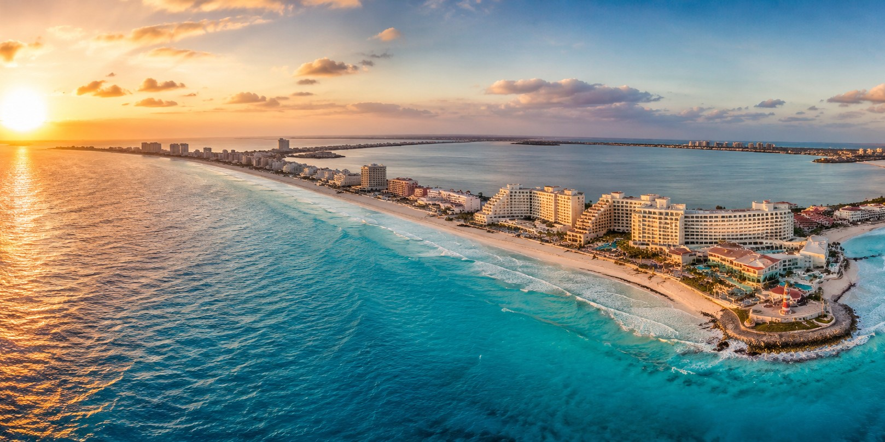
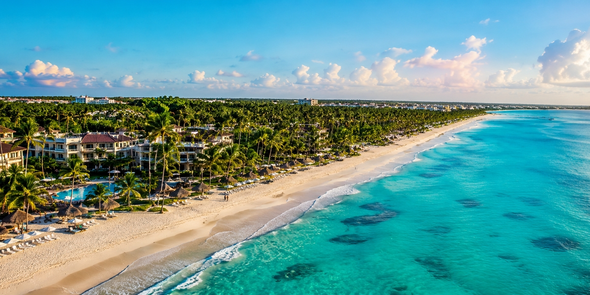

Розбір мікрорайонів
Ми розділяємо великі курортні зони — наприклад, Hotel Zone у Канкуні або Тулум — на мікрорайони з чесним описом плюсів і мінусів кожної ділянки.

Про проєкт Travel Radar LK · Незалежні travel-дослідження
Структуровані розбори мікрорайонів, реальна логістика та чесна економіка поїздок до Канкуна, Рів'єри-Майя, Тулума й Домінікани — без маркетингового шуму.
Наша місія
Правильний вибір району важливіший за вибір конкретного готелю.

Проєкт Travel Radar LK створений, щоб допомогти мандрівникам ухвалювати виважені рішення: у якому районі зупинитися, які приховані витрати закласти в бюджет і як уникнути маркетингових пасток під час вибору готелю.
Ми не публікуємо поверхневі захоплені огляди. Наш фокус — структурована, чесна інформація, що базується на глибокому дослідженні кожного напрямку.
Ми розділяємо великі курортні зони — наприклад, Hotel Zone у Канкуні або Тулум — на мікрорайони з чесним описом плюсів і мінусів кожної ділянки.
Ми аналізуємо вартість трансферів і віддаленість від аеропортів та поромів. Дешевий готель далеко від інфраструктури на практиці часто обходиться дорожче.
Редакційний процес
Кожен розбір напрямку та чек-лист проходить чотири послідовні етапи перевірки перед публікацією.
Вивчаємо повторювані скарги та сильні сторони у реальних відгуках гостей, а не лише середній рейтинг готелю.
Перевіряємо супутникові карти, доступ до пляжу, сезонність саргасуму, час у дорозі від аеропорту та локальний транспорт.
Враховуємо трансфери, курортні збори, податки та реальні витрати на місці, щоб бюджет відповідав дійсності.
Звірка локального контексту з регіональними фахівцями та фінальний редакційний контроль перед публікацією.
Редакція
Ми не вдаємо, що одна людина особисто відвідала тисячі готелів. Travel Radar LK поєднує системну аналітику та локальну регіональну експертизу.
Засновник · Головний редактор · Провідний дослідник
Леонід заснував Travel Radar LK і розробив його дослідницьку методологію. Як головний редактор він контролює стандарти досліджень, редакційний напрямок та фінальну перевірку кожного гайда — замінюючи поверхневі оцінки аналізом тисяч відгуків, супутникових карт та транспортної логістики.
Цей системний підхід сформований більш ніж двадцятирічним досвідом управління складними ІТ-інфраструктурними проєктами на позиції Senior Infrastructure & Systems Engineer — дисципліною, яку він сьогодні застосовує до travel-досліджень.

Карибський регіональний радник
Народився і виріс на острові Сент-Томас. Як корінний житель регіону, Кімалі глибоко розуміє історію, культуру та реальну специфіку острівного життя на Карибах.
Його армійський бекграунд у США та увага до деталей допомагають проєкту в моніторингу регіональних новин, фактчекінгу й оцінці реальної ситуації — щоб гайди відображали місцевий контекст, а не здогадки аутсайдерів.
Спеціаліст із напрямку Мексика
Професійна американська журналістка, випускниця Університету Вісконсин-Медісон. Після років роботи редакторкою журналу про подорожі в Денвері Клер переїхала до Пуерто-Морелос — прибережного містечка між Канкуном і Плайя-дель-Кармен.
Відвідала понад 24 із 32 штатів Мексики — від популярних курортів до прихованих сенотів та автентичних міст. Клер відповідає за оцінку реальної атмосфери мексиканських напрямків, авторські маршрути та візуальну подачу проєкту.
Напрямки досліджень
Головний фокус редакції — карибське узбережжя Мексики, з активним розширенням матеріалів по Домінікані та островах Карибського басейну.
 Головний фокус
Головний фокус
Порівняння районів, чек-листи вибору готелю, сезонність саргасуму, трансфери з аеропорту та реальні бюджети поїздок 2026.
Відкрити хаб Мексики
Хаб країниПунта-Кана, Кап-Кана, Байяібе та північне узбережжя — чесне порівняння пляжів, спокійної води, логістики та готелів all-inclusive.
Відкрити хаб Домінікани Регіональний хаб
Регіональний хаб
Порівняння островів, маршрути та пороми, круїзні eSIM, планування поза сезоном ураганів і реальна вартість тижневого відпочинку.
Відкрити хаб КарибівРедакційна політика
Принципи, за якими ми відбираємо факти, перевіряємо рекомендації та зберігаємо незалежність від готельного маркетингу.
Ми віддаємо пріоритет геолокації, реальній вартості трансферів та агрегованим даним відгуків, а не поодиноким суб'єктивним враженням.
Ми не приймаємо оплату за огляди готелів і не продаємо місця в рейтингах. Усі рекомендації базуються виключно на власному аналізі.
У матеріалах можуть бути партнерські посилання. Вони не збільшують вартість бронювання для вас, але допомагають підтримувати незалежність проєкту.
Листопад 2025
Створили власну методологію досліджень у відповідь на необ'єктивні рекламні огляди.
Початок 2026
Запустили базову серію глибоких розборів районів Канкуна та Рів'єри-Майя.
Літо 2026
Сформували структуровану бібліотеку за районами, готелями, бюджетами, безпекою та сезонами.
Теперішній час
Регулярно оновлюємо наявні гайди та розширюємо глибоке покриття Домінікани й Карибських островів.
Редакція
Знайшли неточність в огляді, помітили зміну умов готелю чи хочете запропонувати тему для дослідження? Будемо раді вашому повідомленню.
Почніть планування
Почніть із центрального хаба по Рів'єрі-Майя або перейдіть до всієї бібліотеки гайдів по Мексиці та Карибах.